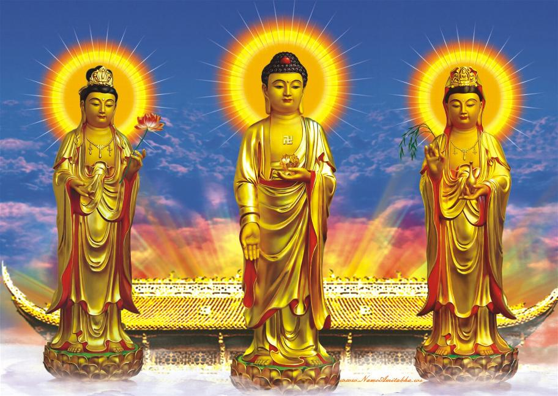

Major Buddhist Traditions
Mahayana Buddhism
Known as the ‘Great Vehicle’ of Buddhism. Mahayana Buddhism generally spread north through India to China, Japan.
Mahayana Buddhism stresses:
- Buddhism is for the masses not just monks;
- The role of the Bodhisattva – altruistic beings working for improvement of world. – Everyone has capacity to be a Bodhisattva;
- Non Dualism – Ultimate reality beyond all divisions;
- Living in the present moment.
Pure Land Buddhism
A more devotional form of Buddhism. Less emphasis on meditation more on belief and devotion to Amitabha – a transcendental being who exists beyond limits of time and space in your own heart. – Pure Land Buddhism stresses practise rather than study.
Varjayana – Tibetan Buddhism
- Developed out of Indian Mahayana. Most popular division of Varjayana Buddhism is the Tibetan Buddhism;
- Includes hidden esoteric (Tantric) teachings not revealed during the Buddha’s life;
- More colourful form of Buddhism, music, chanting, mantras, mudras, mystic diagrams. Deity Yoga e.g. Goddess Tara;
- Tibetan Buddhism became deeply entrenched in Tibetan society, linked to Feudal system. Though 14th Dalai Lama has sought to more Tibetan Buddhism more towards democracy.
Zen Buddhism
- Based on simple, pure insight;
- Developed in China and Japan;
- Often taught through ‘Zen Masters’ adepts of meditation, known for their quirky traditions;
- Little formal ritual. Emphasises Zazen (sitting meditation).